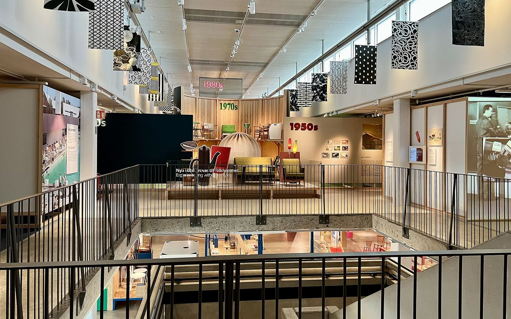
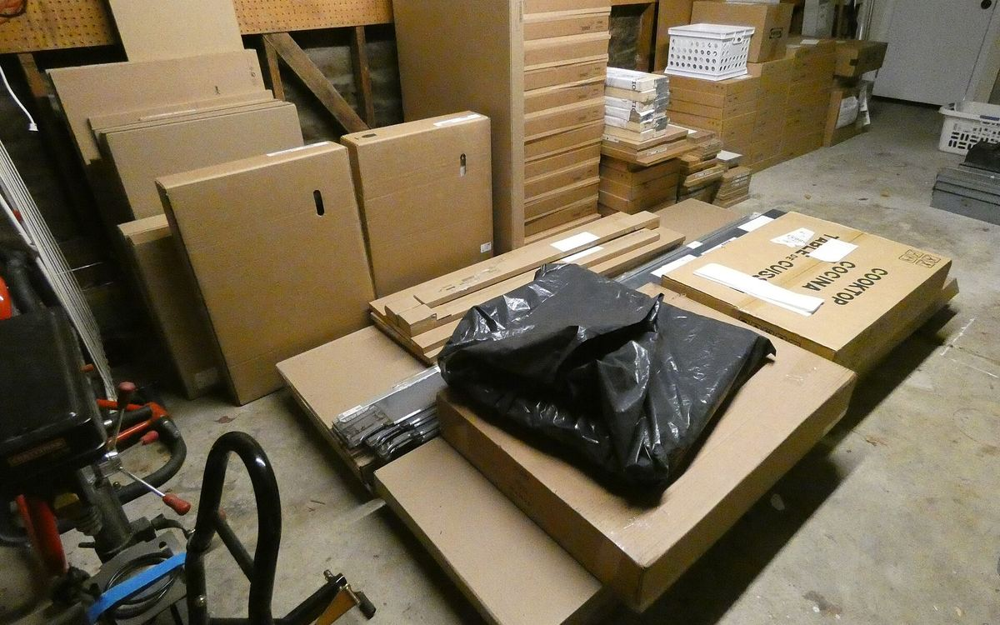
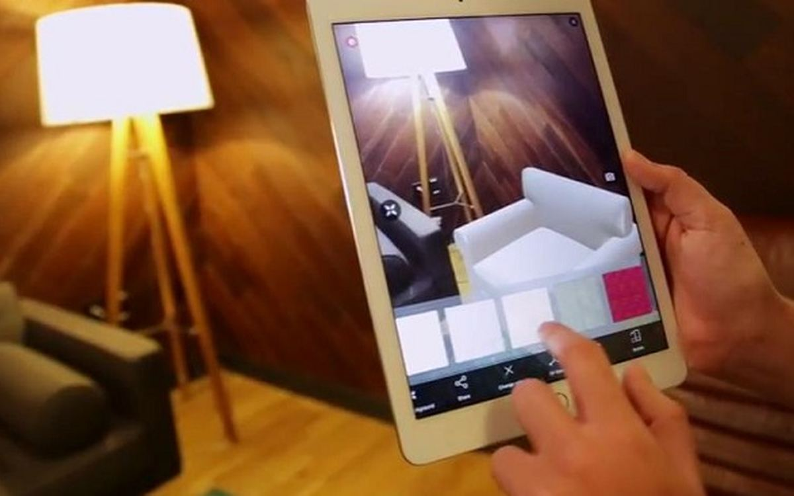
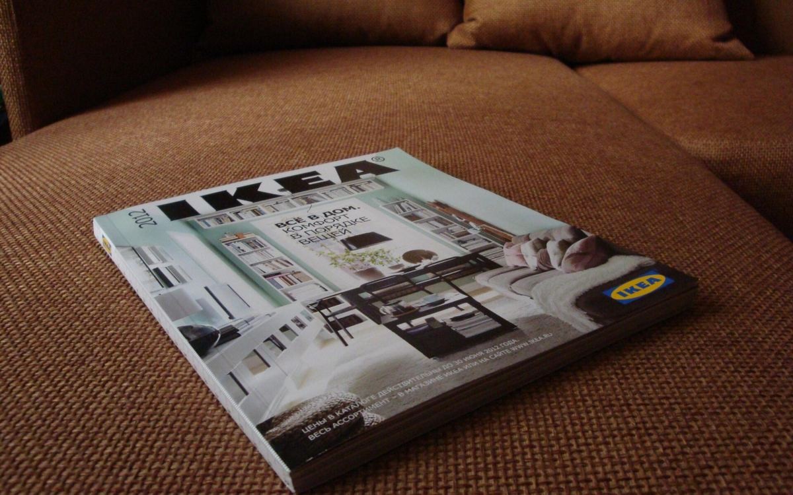
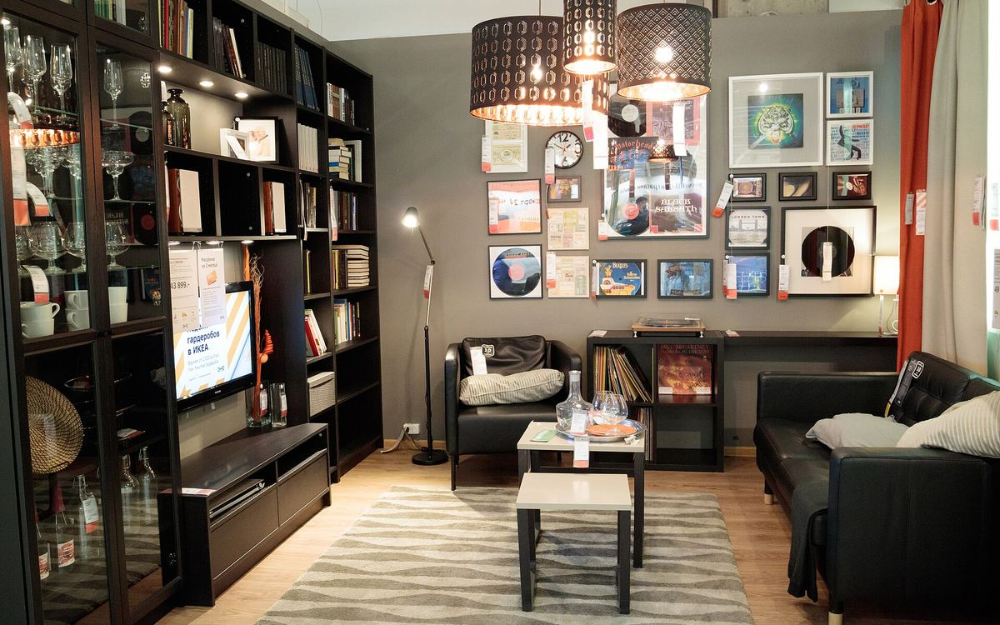
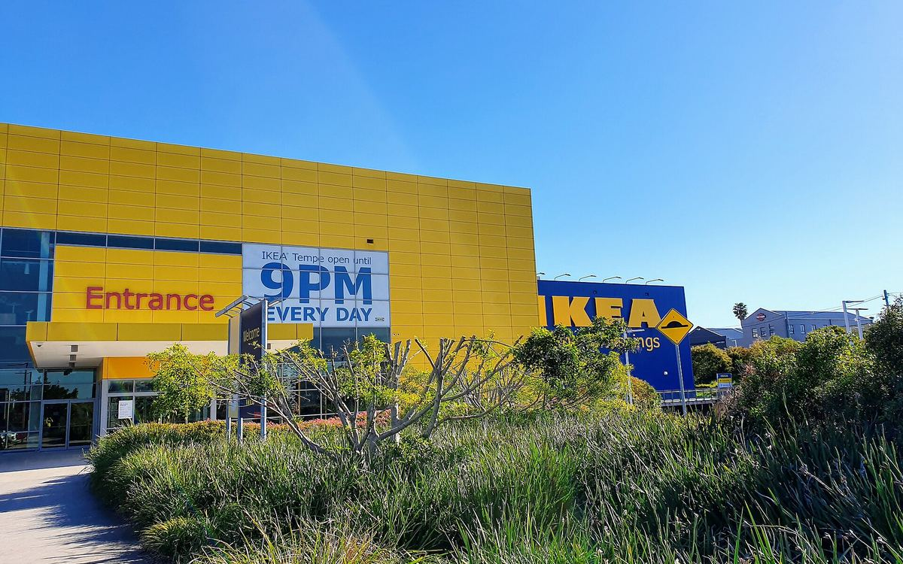
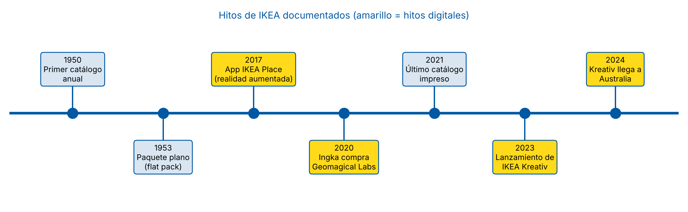

.jpg){kind=link}


Transporte y montaje
Con el paquete plano el mueble viaja desmontado y lo monta el cliente.
De vender por catálogo a escanear tu salón con el móvil. En amarillo, los hitos digitales.
Cada hito indica el cambio, la necesidad que atendía y el resultado cuando la fuente lo da.
Principal medio de marketing hasta 2021.
Necesidad: vender y mostrar el surtido a distancia · Fuente: IKEA US

Muebles desmontados que monta el cliente.
Necesidad: evitar costes y daños en el transporte · Fuente: IKEA US; IKEA UK

Más de 2.000 productos para ver a escala en casa antes de comprar.
Resultado: 98 % de precisión (prensa, secundaria) · Fuente: IKEA Global

IA visual y 3D para impulsar la transformación digital.
Contexto: 2.600 M de visitas a IKEA.com en 2018-19 · Fuente: Ingka Group
La fuente no da el motivo; coincide con el auge digital.
Fuente: IKEA US

Escanear, borrar y colocar muebles. Responde a las dudas del cliente online sobre si el mueble encaja.
Resultado: el 87 % quiere sentirse bien en casa; solo la mitad sabe cómo · Fuente: IKEA UK; IKEA Bélgica

Más de 50 showrooms 3D y escáner, uniendo diseño online y tienda física.
Resultado FY25: visitas online +4,6 %, tienda +1,3 % · Fuente: IKEA Australia; Ingka


Con el paquete plano el mueble viaja desmontado y lo monta el cliente.
Con IKEA Place el cliente ve el mueble a escala con realidad aumentada.
Con Kreativ ya no hay que imaginar ni medir a ojo: se ve el diseño completo.